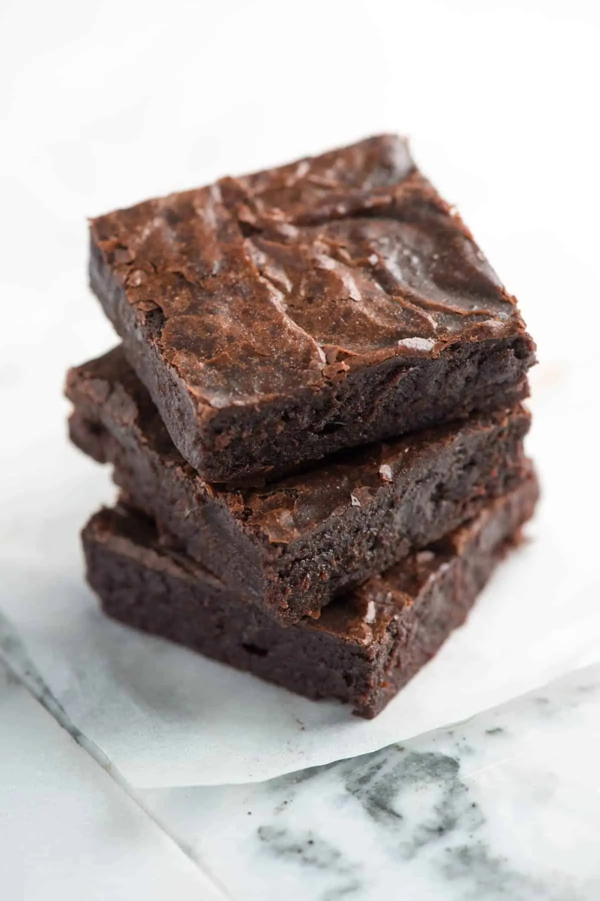

Perfect Fudgy Brownies
- Total time45 mins
- Serves16
- Ingredients8
- Steps10

Ingredients
- 10 tablespoons (145g) unsalted butter
- 1 ¼ cups (250g) granulated sugar
- 3/4 cup plus 2 tablespoons (75g) unsweetened cocoa powder, spooned and leveled
- 1 teaspoon vanilla extract
- 1/4 teaspoon fine sea salt
- 2 large COLD eggs
- 1/2 cup (65g) all-purpose flour, spooned and leveled
- 2/3 cup (80g) chopped walnuts, pecans, or chocolate chips, optional
Directions
- Position an oven rack in the middle of the oven and heat to 325°F (162°C). Line the bottom and sides of an 8-inch square baking pan with parchment paper or aluminum foil, leaving an overhang on opposite sides to help remove the baked brownies from the pan.
- Add the butter to a medium saucepan. Place over medium-low heat and cook until the butter melts completely, then turn off the heat. Stay close, and do not let it brown.
- While the butter is hot, stir in the sugar, cocoa powder, vanilla, and salt. Stir well until blended. Don’t worry if the batter looks gritty. Once you add the eggs, the brownie batter will become smooth.
- Set the saucepan aside to cool until the mixture is warm, not hot, 5 to 10 minutes. Test the temperature by touching the batter, it should be comfortable to hold without feeling hot.
- Add the cold eggs, one at a time, stirring vigorously after each egg.
- When the batter looks thick and well blended, add the flour. Use a spoon to beat the flour into the batter until it is very thick and pulls away from the sides of the bowl. I use a wooden spoon or spatula and beat for 40 to 50 strokes (see video for reference).
- Stir in nuts or chocolate chips (optional).
- Spread the thick brownie batter evenly in the prepared pan. It can be hard to spread because it is so thick. Do your best to push the batter to the corners and even out the top.
- Bake the brownies until the edges look dry and the middle is slightly underbaked, 20 to 30 minutes. A toothpick plunged into the center should emerge somewhat moist with batter. As the brownies cool, they firm up but will always be moist and fudgy in the middle.
- Cool completely before removing the brownies from the pan (this step is essential and helps the brownies set). Cut into 16 squares. For clean edges, use a chef’s knife and wipe it clean after each slice. For guaranteed perfect edges, chill the brownies in the fridge for 1 to 2 hours before slicing.
Recipe credit: inspiredtaste.net)